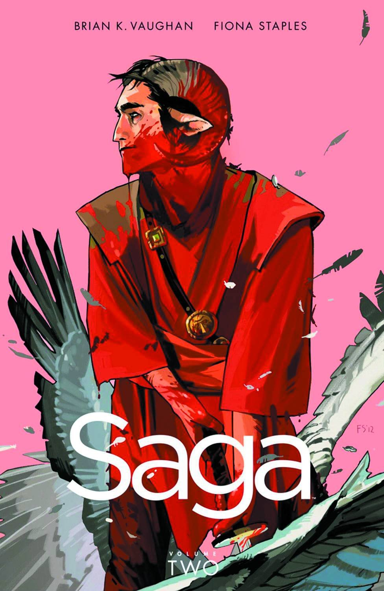
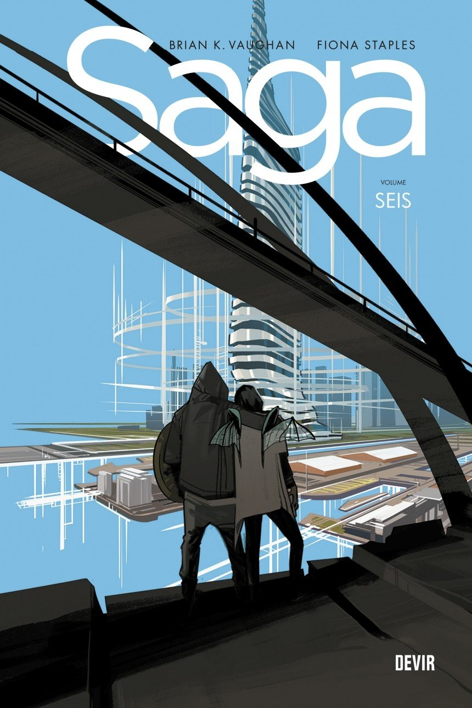
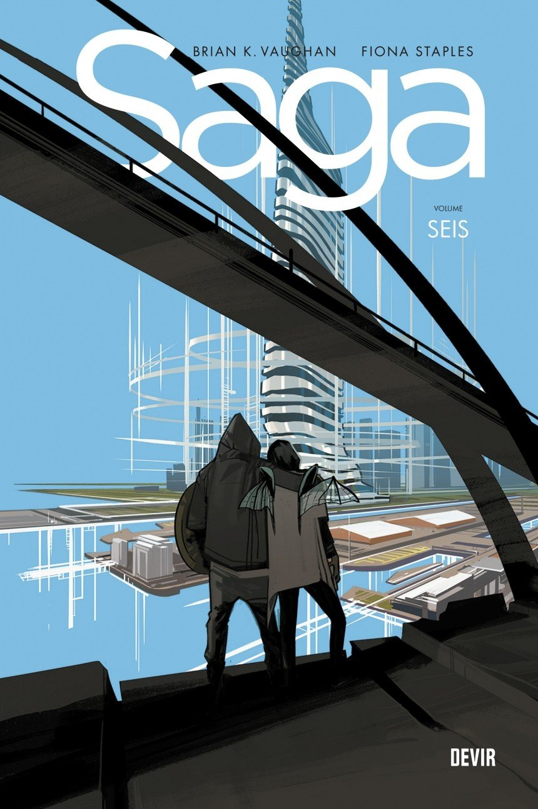

Sobre os criadores
Desde 1997, Brian K. Vaughan já vinha realizando alguns trabalhos pela Marvel e pela DC Comics. Suas brevíssimas passagens por títulos como Batman, X-Men, Homem-Aranha, Mulher-Maravilha, Liga da Justiça, Lanterna Verde e até pelo cult Monstro do Pântano lhe deram experiência e abriram caminho para futuros trabalhos. Durante seu período pela Marvel, escreveu a minissérie Dr. Strange: The Oath (Dr. Estranho: O Juramento) em que reconta a origem do personagem. Em 2006, escreveu a graphic novel Pride of Bahgdad (Os Leões de Bagdá) pelo selo Vertigo, na qual aborda a Guerra do Iraque do ponto de vista de leões fugidos do zoológico da cidade após um bombardeio. Fiona Staples é uma artista canadense, conhecida por seu trabalho como desenhistas de revistas em quadrinhos americanas como Saga, que tem ilustrado desde 2012, e Archie, que ilustrou brevemente em 2015. Staples tem sido citada como uma das melhores artistas em atividade na indústria americana e ganhou vários vezes tanto o Eisner quanto o Harvey Awards.

Sobre a obra
O primeiro arco de história (que reúne as edições 1 à 6) foca no relacionamento entre os personagens Alana e Marko, dois amantes de diferentes planetas cujos povos estão em guerra um com o outro. Alana vem da Alinça Landfall, tecnologicamente avançada, o maior planeta na galáxia, e Marko é da única lua do planeta Lanfall, Wreath, cujo povo usa magia ao invés de armas tecnológicas. Embora a paz fosse restabelecida nos dois mundos de origem, o conflito se espalhou em todos os outros planetas conhecidos, cujas espécies nativas foram forçados a escolher um dos lado. Como Landfall e Wreath estavam em lados opostos, Alana e Marko se conheceram quando ela foi designada para protegê-lo em uma prisão em Cleave, planeta onde ele se tornou um prisioneiro de guerra. Eles fugiram juntos depois de se conhecerem. No início da primeira edição da série, Alana dá à luz a sua filha, Hazel, que, ocasionalmente, narra a série (em primeira pessoa). Logo depois, o trio está preso entre uma equipa de cada um de seus mundos, que acabam matando um ao outro a tentar capturá-los, um massacre que é atribuído ao casal. Em Landfall, o Príncipe Robô IV é atribuído por seu pai para capturá-los, e entra em conflito com o seu homólogo em Wreath, um mercenário chamado The Will. O fantasma de uma menina morta chamada Izabel acaba se tornando uma espécie de babá para a recém nacida Hazel. Os quatro tiveram que escapar do planeta Cleave antes de serem confrontados pelos pais de Marko.
Origem do Quadrinho
| País de origem | Língua de origem | Editora(s) | Formato de publicação | Primeira edição | Gênero | Argumento | Desenho | Personagens principais |
|---|---|---|---|---|---|---|---|---|
| Estados unidos | inglês | Image Comics | Série mensal | 14 de março de 2012 | Space opera | Brian K. Vaughan | Fiona Staples | Alana e Marko |
Quadrinhos Lançados no Brasil


 
